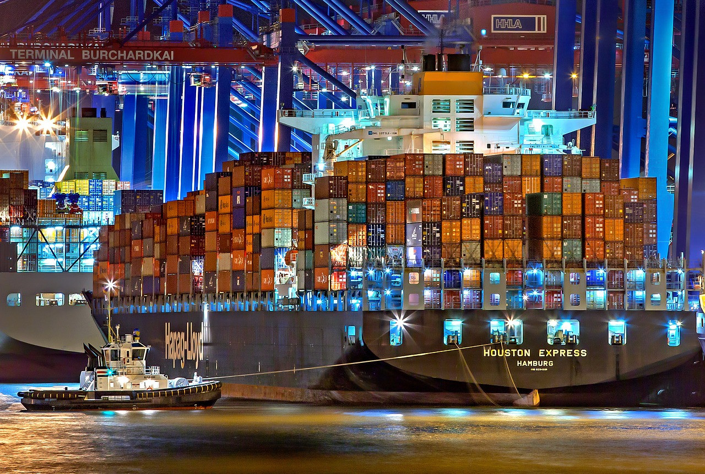
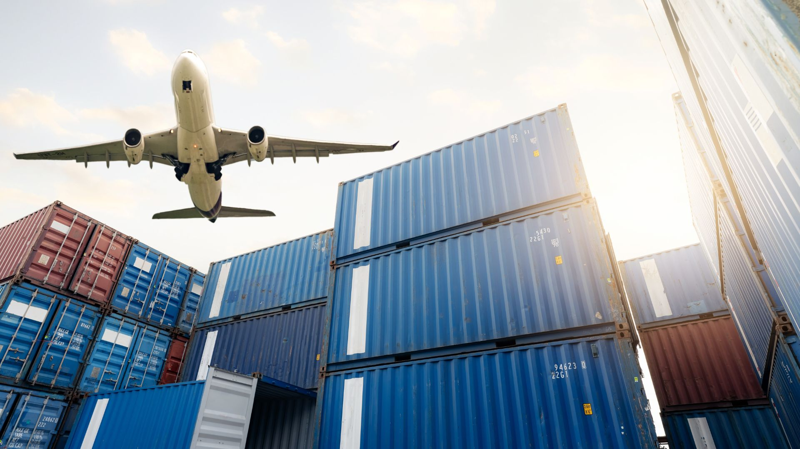
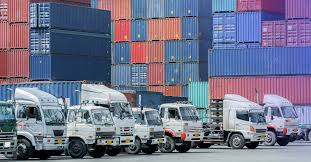

TRANSPORTE MULTIMODAL
Conectando el mundo, un contenedor a la vez
¿Qué es el Transporte Multimodal?
El transporte multimodal es el sistema de movilización de carga que combina dos o más modos de transporte bajo un único contrato y documento. Esto permite optimizar tiempos, reducir costos y mejorar la trazabilidad de la mercancía a lo largo de toda la cadena de suministro.
El transporte ya no es solo un costo — hoy es una ventaja competitiva para las empresas que operan en comercio internacional.
LOS TRES MODOS PRINCIPALES
⚓ TRANSPORTE MARÍTIMO

Mayor capacidad de carga
Ideal para grandes volúmenes a largo plazo. Es el modo más utilizado en el comercio exterior por su bajo costo por tonelada, aunque su tiempo de tránsito es mayor.
✈ TRANSPORTE AÉREO

Mayor velocidad
Utilizado para mercancía urgente, perecedera o de alto valor. Es el modo más rápido, aunque también el de mayor costo por kilogramo transportado.
🚚 TRANSPORTE TERRESTRE

Flexibilidad y última milla
Fundamental para la distribución puerta a puerta y el transporte entre países fronterizos. Conecta puertos y aeropuertos con el destino final de la mercancía.
Ventajas del Transporte Multimodal
- Reducción de costos logísticos
- Un solo documento de transporte (B/L combinado)
- Mayor seguridad de la carga
- Menores tiempos de tránsito
- Trazabilidad completa de la mercancía
Etapas del Proceso Logístico
- Recepción del pedido y documentación
- Embalaje y consolidación de carga
- Trámites aduaneros de exportación
- Transporte internacional (marítimo / aéreo / terrestre)
- Trámites aduaneros de importación
- Entrega final al cliente
Comparativo de Modos de Transporte
| Modo |
Costo |
Velocidad |
Capacidad |
| Marítimo |
Bajo |
Lenta |
Muy alta |
| Aéreo |
Alto |
Muy rápida |
Baja |
| Terrestre |
Medio |
Rápida |
Media |
Enlaces de Interés
Glosario de términos logísticos
Más información sobre transporte multimodal
Escríbenos un correo
Haz clic en la imagen para conocer más
© 2026 Logística & Comercio Internacional | Panamá ®
primera pagina HTML creada por Miriam Cardozo